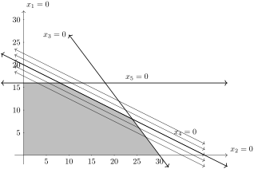

\begin{equation*}
\begin{aligned} \text{Maximize} \amp\amp z = 2x_1 + 4x_2,\amp \\ \text{subject to}\amp\amp 4x_1 + 3x_2 \amp \leq 120, \\ \amp \amp x_1 + 2x_2 \amp \leq 40, \\ \amp \amp x_2 \amp \leq 16, \\ \text{and} \amp \amp x_1, x_2 \amp \geq 0.
\end{aligned}
\end{equation*}
Section 9.1 Uniqueness of LOP Optimal Solutions
Throughout this text, we have generally been interested in a solution to a problem. However, there are times if we would like the solution to be unique or if it isn’t unique, if we can find other solutions.
Let’s return to one of the first examples we saw in this text in Problem 2.2.2. The simplex method was developed and used to solve this in Section 3.2 and the final simplex tableau was listed in (3.2.5), but reproduced here:
\begin{equation*}
\left[\begin{array}{rr|rrrr|r} 1 \amp 0 \amp 0 \amp 1 \amp -2 \amp 0 \amp 8\\ 0 \amp 1 \amp 0 \amp 0 \amp 1 \amp 0 \amp 16\\ 0 \amp 0 \amp 1 \amp -4 \amp 5 \amp 0 \amp 40\\ \hline 0 \amp 0 \amp 0 \amp 1 \amp 1 \amp 1 \amp 56\\ \end{array} \right]
\end{equation*}
The key to knowing that this is an optimal solution comes from the objective row:
\begin{equation*}
\begin{aligned} x_4 + x_5 + z \amp = 56 \amp \amp \text{or} \amp z \amp = 56 - x_4 -x_5 \end{aligned}
\end{equation*}
and if either \(x_4\) or \(x_5\) is brought into the basis, then the value of the variables increases and the objective is decreased. From this we can conclude that the solution
\begin{equation*}
\boldsymbol{x} = \left[ \begin{array}{rr|rrr} 8 \amp 16 \amp 40 \amp 0 \amp 0 \end{array}\right]
\end{equation*}
is optimal and unique.
Subsection 9.1.1 Linear Optimization Problems with non-unique solutions
Consider a seemingly minor change to Problem 2.2.2:
Problem 9.1.1.
If we solve this using the simplex method, the final tableau is
\begin{equation*}
\left[\begin{array}{rr|rrrr|r} 5 \amp 0 \amp 2 \amp -3 \amp 0 \amp 0 \amp 120\\ 0 \amp 5 \amp -1 \amp 4 \amp 0 \amp 0 \amp 40\\ 0 \amp 0 \amp 1 \amp -4 \amp 5 \amp 0 \amp 40\\ \hline 0 \amp 0 \amp 0 \amp 10 \amp 0 \amp 5 \amp 400\\ \end{array} \right]
\end{equation*}
which has the solution:
\begin{equation*}
\begin{aligned} \boldsymbol{x} \amp = \frac{1}{5}\left[ \begin{array}{rr|rrr} 120 \amp 40 \amp 0 \amp 0 \amp 40 \end{array}\right] \\ \amp = \left[ \begin{array}{rr|rrr} 24 \amp 8 \amp 0 \amp 0 \amp 8\end{array}\right] \end{aligned}
\end{equation*}
and \(z= 400/5 = 80\)
This is an optimal solution because writing the objective as \(z = 400 - 10x_4\) shows that increasing \(x_4\) would decrease the objective.
But wait. Looking at the objective, it does not depend on \(x_3\text{,}\) the other parameter. So if we bring that into the basis, and removing \(x_5\) for the same reason we do in phase II, we get the following tableau:
\begin{equation*}
\left[\begin{array}{rr|rrrr|r} 1 \amp 0 \amp 0 \amp 1 \amp -2 \amp 0 \amp 8\\ 0 \amp 1 \amp 0 \amp 0 \amp 1 \amp 0 \amp 16\\ 0 \amp 0 \amp 1 \amp -4 \amp 5 \amp 0 \amp 40\\ \hline 0 \amp 0 \amp 0 \amp 2 \amp 0 \amp 1 \amp 80\\ \end{array} \right]
\end{equation*}
with the basic solution:
\begin{equation*}
\boldsymbol{x} = \left[ \begin{array}{rr|rrr} 8 \amp 16 \amp 40 \amp 0 \amp 0 \end{array}\right]
\end{equation*}
and the objective is still \(z=80\text{.}\)
So it seems like we have two solutions that are optimal. Are there just two solutions? Let’s take a look at the feasible set again.

There are 5 level sets plotted above and the middle one is when \(z=80\text{,}\) the optimal value found above. In this case, the value of the objective along the upper right edge of the feasible set is always the same. That is the objective value is the same for all values on the line segment between \((8,16)\) and \((24,8)\text{.}\)
Checkpoint 9.1.3.
Find other points along the line segment between \((8,16)\) and \((24,8)\) and show that the objective value is equal along there.
The following exercise explores this further.
Checkpoint 9.1.4.
Consider the Linear Optimization Problem
\begin{equation}
\begin{aligned} \text{Maximize} \amp\amp z = 2x_1 + 4x_2 + 2x_3 + 4x_4, \amp \\ \text{subject to} \amp\amp x_1 + 2x_2 + x_3 + 2x_4 \amp \leq 10, \\ \amp\amp 3x_1 + x_2 \phantom{+ x_3 + x_4} \amp \leq 9, \\ \amp \amp \phantom{x_1 + x_2 +} x_3 + x_4 \amp \leq 4, \\ \text{and} \amp \amp x_1, x_2, x_3, x_4 \amp \geq 0.
\end{aligned}\tag{9.1.1}
\end{equation}
(a)
Using the simplex tableau, find an optimal solution.
Solution.
The LOP above has the following initial tableau
\begin{equation*}
\left[\begin{array}{rrrr|rrrr|r} 1 \amp 2 \amp 1 \amp 2 \amp 1 \amp 0 \amp 0 \amp 0 \amp 10\\ 3 \amp 1 \amp 0 \amp 0 \amp 0 \amp 1 \amp 0 \amp 0 \amp 9\\ 0 \amp 0 \amp 1 \amp 1 \amp 0 \amp 0 \amp 1 \amp 0 \amp 4\\ \hline -2 \amp -4 \amp -2 \amp -4 \amp 0 \amp 0 \amp 0 \amp 1 \amp 0\\ \end{array} \right]
\end{equation*}
and performing the pivots \(1 \mapsto 6, 2 \mapsto 5, 3 \mapsto 7\) results in the tableau
\begin{equation*}
\left[\begin{array}{rrrr|rrrr|r} 0 \amp 5 \amp 0 \amp 3 \amp 3 \amp -1 \amp -3 \amp 0 \amp 9\\ 5 \amp 0 \amp 0 \amp -1 \amp -1 \amp 2 \amp 1 \amp 0 \amp 12\\ 0 \amp 0 \amp 5 \amp 5 \amp 0 \amp 0 \amp 5 \amp 0 \amp 20\\ \hline 0 \amp 0 \amp 0 \amp 0 \amp 10 \amp 0 \amp 0 \amp 5 \amp 100\\ \end{array} \right]
\end{equation*}
The solution to this is
\begin{equation*}
\boldsymbol{x} = \frac{1}{5} \left[ \begin{array}{rrrr|rrr} 12 \amp 9 \amp 20 \amp 0 \amp 0 \amp 0 \amp 0 \end{array}\right]
\end{equation*}
with \(z=120/5=20\text{.}\)
(b)
Determine if the LOP has a unique optimal solution or not:
(c)
If the solution is not unique, find one or more solutions.
Solution.
Since the dual value of \(x_4\) is 0, we pivot to bring it into the basis or \(4 \mapsto 2\text{.}\) The resulting solution is
\begin{equation*}
\boldsymbol{x} = \frac{1}{3} \left[ \begin{array}{rrrr|rrr} 9 \amp 0 \amp 3 \amp 9 \amp 0 \amp 0 \amp 0 \end{array}\right]
\end{equation*}
with \(z=60/3=20\text{.}\)
Since the dual value of \(x_6\) is also 0, we can pivot to bring it into the basis or \(6 \mapsto 3\text{.}\) The resulting solution is
\begin{equation*}
\boldsymbol{x} = \left[ \begin{array}{rrrr|rrr} 2 \amp 0 \amp 0 \amp 4 \amp 0 \amp 3 \amp 0 \end{array}\right]
\end{equation*}
with \(z=20\text{.}\)
Subsection 9.1.2 Determining Uniqueness using Julia
If we solve Problem 9.1.1 using Julia with the following code:
m = Model(HiGHS.Optimizer)
@variable(m, x₁ ≥ 0)
@variable(m, x₂ ≥ 0)
@objective(m, Max, 2x₁+4x₂)
@constraint(m, c1, 4x₁+3x₂ ≤ 120)
@constraint(m, c2, x₁+2x₂ ≤ 40)
@constraint(m, c3, x₂ ≤ 16)
print(m)
To solve the problem, we use:
set_silent(m)
optimize!(m)
is_solved_and_feasible(m)
which returns
true, indicating that the problem was solved and is feasible. To get the optimal values of the variables and objective, we use:
value(x₁), value(x₂), objective_value(m)
resulting in \((8.0,16.0,80.0)\text{.}\)
To determine if the solution is unique, let’s look at the objective row. The dual variables corresponding to the variables can be found with:
map(var -> name(var) => reduced_cost(var), all_variables(m))
and the dual variables corresponding to the constraints can be found with:
map(var->name(var) => shadow_price(var), all_constraints(m, include_variable_in_set_constraints = false))
and this returns
3-element Vector{Pair{String, Float64}}:
"c1" => 0.0
"c2" => -2.0
"c3" => -0.0
and notice that this is objective row of the final tableau above, however, the signs are reversed and they are shuffled a bit. We can figure out which variable has which dual variable by separating the variables and the constraints. The values of objective row of the variables can be found with
Recall that we called the bottom row of the final tableau, \(\boldsymbol{c}^{\intercal}\) and then using this notation
\begin{equation*}
\boldsymbol{c}^{\intercal} = \left[\begin{array}{cc|ccc} 0 \amp 0 \amp 0 \amp 2 \amp 0 \end{array}\right]
\end{equation*}
which is the same as when we did the tableau above. This is great except that we don’t know which variables are basis and nonbasic. Fortunately, Julia can tell use these as well. For the regular variables, executing
[ xi => get_attribute(xi, MOI.VariableBasisStatus()) for xi in all_variables(m) ]
returns
2-element Vector{Pair{VariableRef, MathOptInterface.BasisStatusCode}}:
x₁ => MathOptInterface.BASIC
x₂ => MathOptInterface.BASIC
indicating that both of the original variables are basic. For the constraints, evaluate
map(c-> name(c) => MOI.get(m, MOI.ConstraintBasisStatus(), c), all_constraints(m, include_variable_in_set_constraints = false))
which returns
3-element Vector{Pair{String, MathOptInterface.BasisStatusCode}}:
"c1" => MathOptInterface.BASIC
"c2" => MathOptInterface.NONBASIC
"c3" => MathOptInterface.NONBASIC
Thus,
x₁, x₂, c1 are basic and c2, c3 are nonbasic, or using the set notation from earlier in the next \(\beta = \{1,2,3\}\) and \(\pi=\{4,5\}\text{.}\) Again, this is the same as using the tableau above.
In terms of uniqueness, the key part to look at is any dual variable that is 0 for a nonbasic variable. This occurs for
c3 indicating that 1) this solution is not unique and 2) pivoting to bring c3 (or \(x_5\) using previous notation) into the basis will result in another optimal solution to this LOP.
Unfortunately, using the Julia packages we have, we cannot pivot to a new solution, so in the next section we show how to find additional solutions. The following exercise repeats Checkpoint 9.1.4 with Julia.
Checkpoint 9.1.5.
Consider the LOP
\begin{equation*}
\begin{aligned} \text{Maximize} \amp\amp z = 2x_1 + 4x_2 + 3x_3 + 4x_4, \amp \\ \text{subject to} \amp\amp x_1 + 2x_2 + x_3 + 2x_4 \amp \leq 10, \\ \amp\amp 3x_1 + x_2 \phantom{+ x_3 + x_4} \amp \leq 9, \\ \amp\amp \phantom{x_1 + x_2 +} x_3 + x_4 \amp \leq 4, \\ \text{and} \amp \amp x_1, x_2, x_3, x_4 \amp \geq 0.
\end{aligned}
\end{equation*}
Use Julia to determine if the optimal solution is unique or not.
Solution.
First, we set up the model in Julia:
m3 = Model(HiGHS.Optimizer)
@variable(m3, x₁ ≥ 0)
@variable(m3, x₂ ≥ 0)
@variable(m3, x₃ ≥ 0)
@variable(m3, x₄ ≥ 0)
@objective(m3, Max, 2x₁ + 4x₂ + 3x₃ + 4x₄)
@constraint(m3, c1, x₁ + 2x₂ + x₃ + 2x₄ ≤ 10)
@constraint(m3, c2, 3x₁ + x₂ ≤ 9)
@constraint(m3, c3, x₃ + x₄ ≤ 4)
print(m3)
which echos out the expected model. If we solve the model with:
set_silent(m3)
optimize!(m3)
is_solved_and_feasible(m3)
and this returns
true, indicating the solution is found. The solution is
value(x₁), value(x₂), value(x₃), value(x₄), objective_value(m3)
which results in \((0.0, 3.0, 4.0, 0.0, 24.0)\) and interestingly, this is not one of the solutions found in Checkpoint 9.1.4.
Subsection 9.1.3 Uniqueness in ILOPs
Consider the integer linear optimization problem (ILOP)
\begin{equation*}
\begin{aligned} \text{Maximize} \amp\amp z = x_1 + x_2, \amp \\ \text{subject to} \amp\amp 17x_1 + 16x_2 \amp \leq 175, \\ \amp\amp 4x_1 + 2x_2 \amp \leq 31, \\ \amp \amp 3x_1 + 11x_2 \amp \leq 82, \\ \text{and} \amp \amp x_1, x_2 \amp \in \mathbb{N}_0 \end{aligned}
\end{equation*}
Solving this using Gomory’s method in Section 4.2 will result in the following simplex tableau in the end:
\begin{equation*}
\left[ \begin{array}{rr|rrrrrrrrrrrr|r} 0 \amp 3 \amp 0 \amp 0 \amp 0 \amp 0 \amp 0 \amp 0 \amp 0 \amp 0 \amp 0 \amp 4 \amp -3 \amp 0 \amp 15\\ 3 \amp 0 \amp 0 \amp 0 \amp 0 \amp 0 \amp 0 \amp 0 \amp 0 \amp 0 \amp 0 \amp -3 \amp 3 \amp 0 \amp 15\\ 0 \amp 0 \amp 0 \amp 0 \amp 0 \amp 3 \amp 0 \amp 0 \amp 0 \amp 0 \amp 0 \amp -17 \amp 3 \amp 0 \amp 27\\ 0 \amp 0 \amp 3 \amp 0 \amp 0 \amp 0 \amp 0 \amp 0 \amp 0 \amp 0 \amp 0 \amp -13 \amp -3 \amp 0 \amp 30\\ 0 \amp 0 \amp 0 \amp 0 \amp 3 \amp 0 \amp 0 \amp 0 \amp 0 \amp 0 \amp 0 \amp -35 \amp 24 \amp 0 \amp 36\\ 0 \amp 0 \amp 0 \amp 0 \amp 0 \amp 0 \amp 0 \amp 3 \amp 0 \amp 0 \amp 0 \amp -40 \amp 21 \amp 0 \amp 45\\ 0 \amp 0 \amp 0 \amp 0 \amp 0 \amp 0 \amp 3 \amp 0 \amp 0 \amp 0 \amp 0 \amp -11 \amp 0 \amp 0 \amp 18\\ 0 \amp 0 \amp 0 \amp 0 \amp 0 \amp 0 \amp 0 \amp 0 \amp 0 \amp 3 \amp 0 \amp 0 \amp -3 \amp 0 \amp 3\\ 0 \amp 0 \amp 0 \amp 0 \amp 0 \amp 0 \amp 0 \amp 0 \amp 3 \amp 0 \amp 0 \amp -9 \amp 3 \amp 0 \amp 9\\ 0 \amp 0 \amp 0 \amp 0 \amp 0 \amp 0 \amp 0 \amp 0 \amp 0 \amp 0 \amp 3 \amp -4 \amp 0 \amp 0 \amp 3\\ 0 \amp 0 \amp 0 \amp 3 \amp 0 \amp 0 \amp 0 \amp 0 \amp 0 \amp 0 \amp 0 \amp 4 \amp -6 \amp 0 \amp 3 \\ \hline 0 \amp 0 \amp 0 \amp 0 \amp 0 \amp 0 \amp 0 \amp 0 \amp 0 \amp 0 \amp 0 \amp 1 \amp 0 \amp 3 \amp 30 \end{array}\right]
\end{equation*}
This shows that the optimal solution to the ILOP is \((x_1, x_2) = (5,5 )\) with objective value \(z=10\text{.}\) As pointed out above, the key to determining if this solution is unique is to look at the objective row. The nonbasic variable \(x_{13}\) has a zero coefficient in the objective row, indicating that bringing this variable into the basis will not change the objective value.
If we perform the pivot \(13 \mapsto 5\text{,}\) we get the tableau
\begin{equation*}
\left[ \begin{array}{rr|rrrrrrrrrrrr|r} 0 \amp 24 \amp 0 \amp 0 \amp 3 \amp 0 \amp 0 \amp 0 \amp 0 \amp 0 \amp 0 \amp -3 \amp 0 \amp 0 \amp 156\\ 24 \amp 0 \amp 0 \amp 0 \amp -3 \amp 0 \amp 0 \amp 0 \amp 0 \amp 0 \amp 0 \amp 11 \amp 0 \amp 0 \amp 84\\ 0 \amp 0 \amp 0 \amp 0 \amp -3 \amp 24 \amp 0 \amp 0 \amp 0 \amp 0 \amp 0 \amp -101 \amp 0 \amp 0 \amp 180\\ 0 \amp 0 \amp 24 \amp 0 \amp 3 \amp 0 \amp 0 \amp 0 \amp 0 \amp 0 \amp 0 \amp -139 \amp 0 \amp 0 \amp 276\\ 0 \amp 0 \amp 0 \amp 0 \amp 3 \amp 0 \amp 0 \amp 0 \amp 0 \amp 0 \amp 0 \amp -35 \amp 24 \amp 0 \amp 36\\ 0 \amp 0 \amp 0 \amp 0 \amp -21 \amp 0 \amp 0 \amp 24 \amp 0 \amp 0 \amp 0 \amp -75 \amp 0 \amp 0 \amp 108\\ 0 \amp 0 \amp 0 \amp 0 \amp 0 \amp 0 \amp 24 \amp 0 \amp 0 \amp 0 \amp 0 \amp -88 \amp 0 \amp 0 \amp 144\\ 0 \amp 0 \amp 0 \amp 0 \amp 3 \amp 0 \amp 0 \amp 0 \amp 0 \amp 24 \amp 0 \amp -35 \amp 0 \amp 0 \amp 60\\ 0 \amp 0 \amp 0 \amp 0 \amp -3 \amp 0 \amp 0 \amp 0 \amp 24 \amp 0 \amp 0 \amp -37 \amp 0 \amp 0 \amp 36\\ 0 \amp 0 \amp 0 \amp 0 \amp 0 \amp 0 \amp 0 \amp 0 \amp 0 \amp 0 \amp 24 \amp -32 \amp 0 \amp 0 \amp 24\\ 0 \amp 0 \amp 0 \amp 24 \amp 6 \amp 0 \amp 0 \amp 0 \amp 0 \amp 0 \amp 0 \amp -38 \amp 0 \amp 0 \amp 96 \\ \hline 0 \amp 0 \amp 0 \amp 0 \amp 0 \amp 0 \amp 0 \amp 0 \amp 0 \amp 0 \amp 0 \amp 8 \amp 0 \amp 24 \amp 240 \end{array}\right]
\end{equation*}
which has the basic solution \((x_1, x_2) = (7/2,13/2)\) with objective value \(z=10\) and this is not an integer solution. If we perform Gomory’s method another time, we will reach the tableau:
\begin{equation*}
\left[ \begin{array}{rr|rrrrrrrrrrrrr|r} 0 \amp 3 \amp 0 \amp 0 \amp 0 \amp 0 \amp 0 \amp 0 \amp 0 \amp 0 \amp 0 \amp -3 \amp 0 \amp 3 \amp 0 \amp 18\\ 3 \amp 0 \amp 0 \amp 0 \amp 0 \amp 0 \amp 0 \amp 0 \amp 0 \amp 0 \amp 0 \amp 4 \amp 0 \amp -3 \amp 0 \amp 12\\ 0 \amp 0 \amp 0 \amp 0 \amp 0 \amp 3 \amp 0 \amp 0 \amp 0 \amp 0 \amp 0 \amp -10 \amp 0 \amp -3 \amp 0 \amp 24\\ 0 \amp 0 \amp 3 \amp 0 \amp 0 \amp 0 \amp 0 \amp 0 \amp 0 \amp 0 \amp 0 \amp -20 \amp 0 \amp 3 \amp 0 \amp 33\\ 0 \amp 0 \amp 0 \amp 0 \amp 0 \amp 0 \amp 0 \amp 0 \amp 0 \amp 0 \amp 0 \amp -7 \amp 3 \amp 3 \amp 0 \amp 3\\ 0 \amp 0 \amp 0 \amp 0 \amp 0 \amp 0 \amp 0 \amp 3 \amp 0 \amp 0 \amp 0 \amp 9 \amp 0 \amp -21 \amp 0 \amp 24\\ 0 \amp 0 \amp 0 \amp 0 \amp 0 \amp 0 \amp 3 \amp 0 \amp 0 \amp 0 \amp 0 \amp -11 \amp 0 \amp 0 \amp 0 \amp 18\\ 0 \amp 0 \amp 0 \amp 0 \amp 0 \amp 0 \amp 0 \amp 0 \amp 0 \amp 3 \amp 0 \amp -7 \amp 0 \amp 3 \amp 0 \amp 6\\ 0 \amp 0 \amp 0 \amp 0 \amp 0 \amp 0 \amp 0 \amp 0 \amp 3 \amp 0 \amp 0 \amp -2 \amp 0 \amp -3 \amp 0 \amp 6\\ 0 \amp 0 \amp 0 \amp 0 \amp 0 \amp 0 \amp 0 \amp 0 \amp 0 \amp 0 \amp 3 \amp -4 \amp 0 \amp 0 \amp 0 \amp 3\\ 0 \amp 0 \amp 0 \amp 3 \amp 0 \amp 0 \amp 0 \amp 0 \amp 0 \amp 0 \amp 0 \amp -10 \amp 0 \amp 6 \amp 0 \amp 9\\ 0 \amp 0 \amp 0 \amp 0 \amp 3 \amp 0 \amp 0 \amp 0 \amp 0 \amp 0 \amp 0 \amp 21 \amp 0 \amp -24 \amp 0 \amp 12 \\ \hline 0 \amp 0 \amp 0 \amp 0 \amp 0 \amp 0 \amp 0 \amp 0 \amp 0 \amp 0 \amp 0 \amp 1 \amp 0 \amp 0 \amp 3 \amp 30 \end{array}\right]
\end{equation*}
The basic solution is now \((x_1, x_2) = (6,4)\) with objective value \(z=10\text{,}\) so this is another optimal solution.
Gomory’s method doesn’t guarantee that other solutions will be found. In this case, there was a cutting plane that was parallel to the objective function, which is why both solutions were found.
In Section 9.2, we will use Julia to find other solutions.